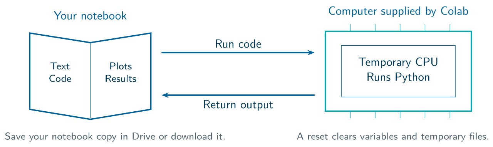
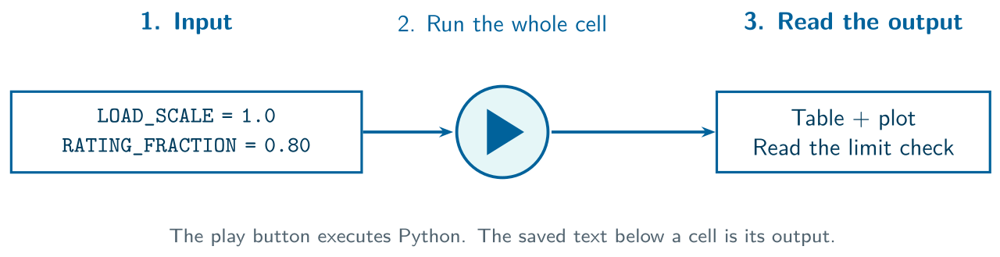
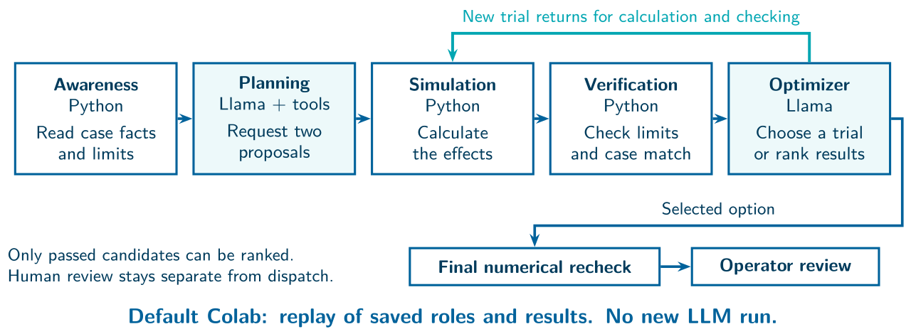

Participant Lab Guide
Download the printable guide · Open the one required Colab
1. Start with one notebook
Classroom Labs / participant guide

Presenters: Alaa Selim, MIT/Dartmouth; Mohamed Chehada, UT Austin.
Open Classroom_Labs.ipynb. It covers voltage, restoration, cyber and the saved Llama replays. The website’s other notebooks are companion resources.
1. Keep your copy. Sign in and save a copy in Drive, or download your notebook when you finish.
2. Connect a CPU. Run the first setup cell. Wait for Ready, then run L0 and L1. Keep both switches False.
3. Follow the slides. Run each named cell when prompted. You will change one number in each case. No coding experience or live LLM service is required.
The runtime is a temporary computer. Saving the notebook does not keep its temporary files or variables. After a reset, rerun setup and earlier cells.
Before the first case, show your partner where the code, play button and output appear.
2. Learn with one small experiment
Predict / run / read / change / explain

Read the input. Find the L heading in the notebook. The slide shows selected lines; run the full cell.
Predict first. Tell your partner what you expect before revealing the result.
Run and wait. Use the play button beside that cell. Read the new table or plot underneath it.
Change one input. Rerun the cell, compare outputs and explain which check supports your next step.
Use the labels. Fresh means calculated now. Recorded replay means an actual old model reply with its original context. A saved controller can produce a new proposal from old weights.
Common messages: HOLD means a required condition is missing or unmet. REVIEW means a person still needs to assess it. L11 SKIPPED is expected when the live-model switch is False.
If a variable is missing: rerun the required earlier cells. Editing a number does not update an old output until you rerun.
Work in pairs: one person runs, one checks. Swap roles for the next case.
3. Case 1: voltage support
L2–L5 / exercise on slide 25

Main idea: check the numbers before reporting a result. Source: Monica Lam, CS224V Lecture 1, p.19.
Goal: compare two control proposals, then check their voltage and current limits.
Run L2 at the defaults: LOAD_SCALE = 1.0 and RATING_FRACTION = 0.80. Read feasible, current_step_J and max_allowed_current_pct.
Read the plots: the left plot shows sorted modeled voltages. The right plot compares current use with the 100% allowed-current line.
Four-minute task: change only RATING_FRACTION to 0.75. Predict, rerun all of L2 and compare both methods. Check limits before comparing the score J.
Reset: restore 0.80 and rerun L2. Then follow L3–L5. Those cells use the separate original test_01 archive; your edited L2 does not rewrite it.
Model coverage: the default check covers the MV model. It does not prove that every LV device or dynamic limit passes.
Record: the changed allowance, each current percentage, pass/fail, and what the model does not cover.
4. Case 2: restoring service
L6–L7 / exercise on slide 44

Main idea: define the task rules. Source: Monica Lam, CS224V Lecture 1, p.40.
Goal: see why restoring the most kW can differ from serving critical loads.
Run L6: compare served_kw and critical_kw for the priority-weighted plan and the maximum-kW plan. Both use the same six-node graph.
Read the plots together: total service is on the left; critical service is on the right. Explain the tradeoff at 40 kW.
Four-minute task: append 180. to CAPACITIES_KW. Keep 40. first. Predict, rerun L6 and compare the 40 kW and 180 kW outcomes.
Reset before L7: restore the original capacity list and rerun L6. L7 uses the first record, then tests a changed request with the old evidence.
Meaning of HOLD: old evidence no longer matches. That does not prove a newly calculated plan would fail. The model also omits AC voltage and physical switching order.
Record: total and critical kW at both capacities. Explain which service goal each plan follows.
5. Case 3: checking suspicious readings
L8–L9 / exercise on slide 59

Main idea: check the decision and its assumptions. Source: Monica Lam, CS224V Lecture 1, p.53.
Goal: distinguish a reading that fits the model from a reading that is true.
Run L8: compare isolated bias with coordinated Hc shifts. The residual alarm measures mismatch. State error uses known simulation truth for teaching.
Four-minute task: add .10 to ATTACK_SCALES. Predict, rerun L8 and compare the alarm with the state error at that scale.
Reset before L9: restore the original scale list and rerun L8. L9 is a separate fixed recovery case; its correction does not follow your changed sweep.
Run L9: no trusted replacement data gives HOLD. Assuming the additional readings are trusted allows a PROPOSE result. The calculation does not authenticate those readings.
Discuss: a small residual or clear model explanation alone cannot establish sensor trust.
Record: residual J, alarm flag, state error and the condition needed before a recovery proposal.
6. Five roles and operator review
L10 / L10B / L11 / L12

Five roles: awareness reads facts; planning requests tools; simulation calculates; verification checks; the optimizer requests another trial or ranks passed options.
What runs: one Llama model fills the planning and optimizer roles. Python runs the other stages. L10 displays their saved trace, not a new multi-agent run.
Run L10, then L10B: set SCENARIO = "voltage", then "restoration" and "cyber", rerunning each time. These use separate recorded studies.
Follow the agentic loop: goal, Llama tool choice, returned evidence, next choice. The replay makes no new model call.
Restoration challenge: find the wrong Llama ranking. Explain why the numerical guard keeps the lower-cost passed candidate.
L11: keep the live call disabled. L12: inspect the full-scope HOLD, the wrong-ID rejection and the simulated readback. equipment_dispatch stays False.
Exit ticket: explain one result using input, tool, result, check and operator decision. Save the changed inputs and outputs.
Choose one case. Which decision did Llama make, which fact came from a tool, and what must the operator still review?
Stanford teaching source: Monica Lam, CS224V Lecture 1: Introduction, Fall 2026, pp.2, 19, 40 and 52–53. Google Colab FAQ. Full references and figure credits.